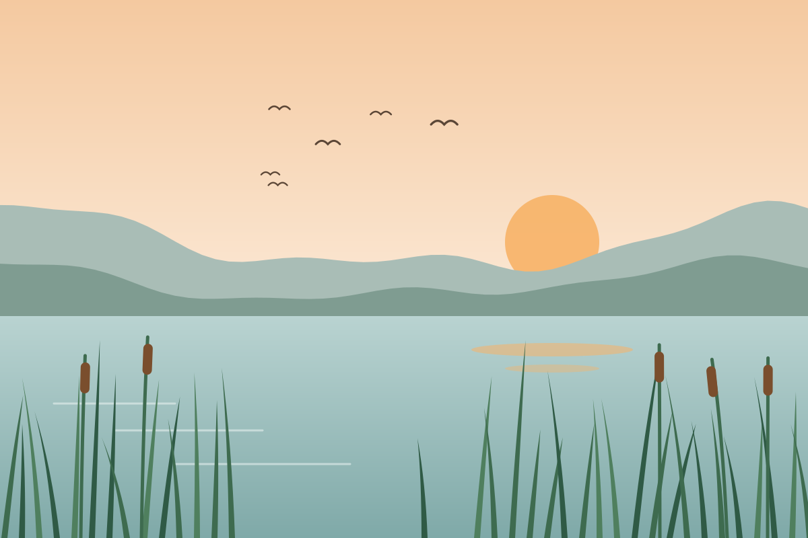
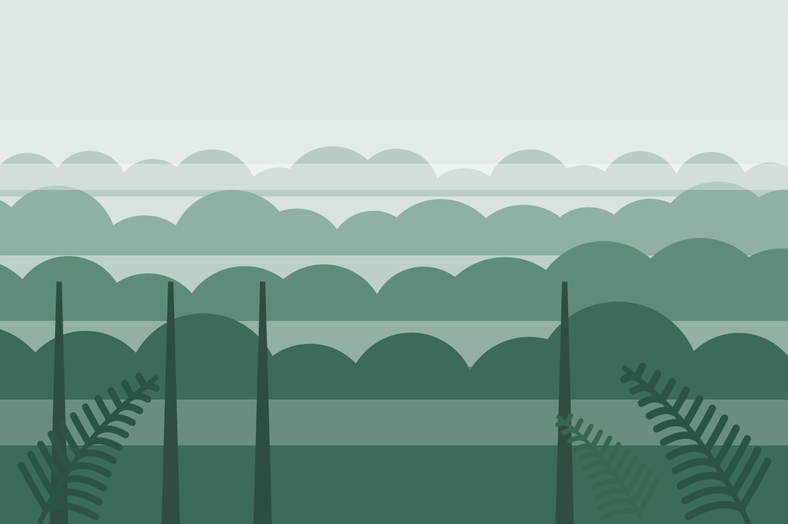
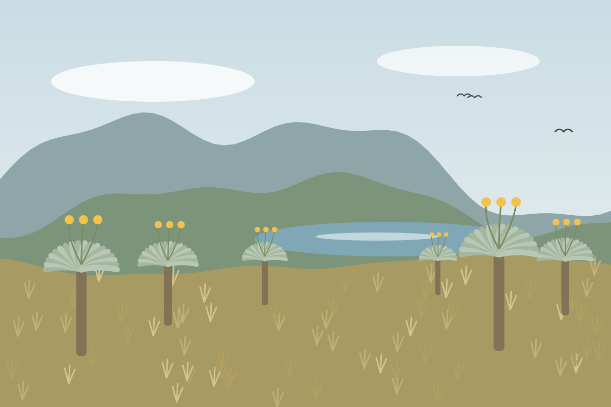

Humedales
Juncales y espejos de agua donde viven la tingua bogotana y el cucarachero de pantano, dos especies amenazadas.
Caminatas en grupos pequeños, con guía y binoculares, para quienes nunca han observado aves y para quienes ya llevan su lista.

Bogotá está rodeada de lugares muy distintos para observar aves. En una mañana se puede pasar del humedal al bosque de niebla, y en un día completo se llega al páramo. Cada ecosistema tiene sus propias especies, sus horarios y su forma de recorrerlo.

Juncales y espejos de agua donde viven la tingua bogotana y el cucarachero de pantano, dos especies amenazadas.

Bosques húmedos cubiertos de musgos, donde las aves se mueven en bandadas de varias especies.

Paisajes de frailejones y lagunas por encima de los 3.000 metros, hogar de colibríes endémicos.
| Fecha | Salida | Nivel | Duración | Valor por persona |
|---|
Revisa la fecha, el nivel, la duración y los cupos disponibles.
Indica cuántas personas van y deja tus datos. El pago se coordina después.
Recibe el punto de encuentro y la lista de qué llevar.
Un recorrido de 30 segundos por lo que vivirás el día de la salida.
Escríbenos o revisa las preguntas frecuentes.